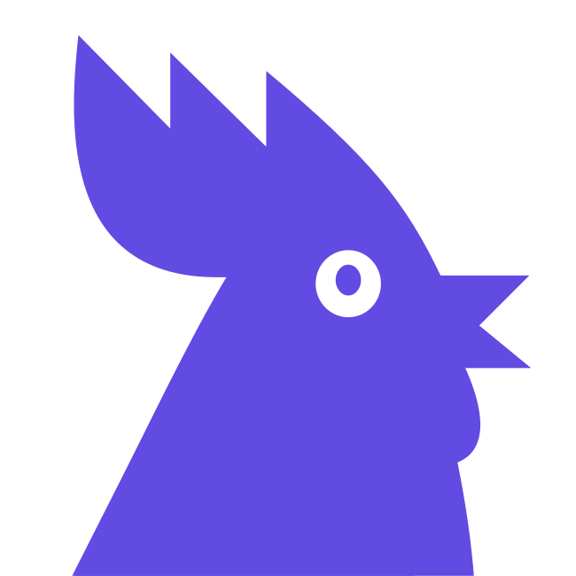

{{ caption }}
{{ etaLabel }}
{{ eta }}{{ etaUnit }}
{{ etaNote }}
{{ title }}
{{ etaLabel }}
{{ eta }}
{{ etaNote }}
{{ title }}
{{ sub }}
Оплатите в течение
{{ leftMin }}{{ leftUnit }}
{{ sub }}
{{ title }}
{{ sub }}

Возврат {{ refund }}{{ refundSub }}
-
{{ st.label }}
{{ st.desc }} {{ st.time }}